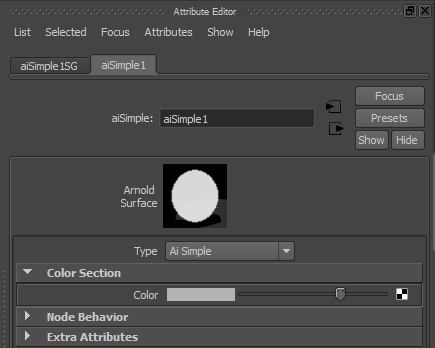

请参见创建简单插件，以了解如何创建简单的 Arnold 着色器。
为使此着色器在 Maya 用户界面中可用，必须将应用程序特定的元数据添加到此着色器。
添加元数据的首选方法是创建元数据文件，该文件将在加载着色器时自动使用。这样一来，修改操作将变得更轻松，而无需重新编译着色器。这也会将特定于 Maya 的元数据保存在 MtoA 文件夹中，而不是着色器自身（可能要在 Maya 外部重用）。
这可以在以下代码中体现出来：
simpleShader.mtd
# simple 0x00070000
[node simple]
maya.name STRING "mySimple"
maya.id INT 0x00070000
maya.classification STRING "shader/surface"
maya.output_name STRING "outColor"
maya.output_shortname STRING "out"
[attr color]
maya.name STRING "constantColor" 如果没有为着色器指定 maya.name，则会自动为着色器指定一个名称，该名称是其 Arnold 节点名称加上 ai 前缀。在本例中，该名称为 aiSimple。
从 Autodesk Maya 开发人员帮助中：
对于永远仅用于站点内部的插件，请使用采用单个无符号整型参数的构造函数。为此类插件保留的数值范围从 0 到 0x7ffff（524288 个 ID）。
Maya 随附的插件开发工具包中包含示例插件，其所用的 ID 范围从 0x80000 到 0xfffff（524288 个 ID）。如果自定义其中一个示例插件，则您应该更改其 ID 以避免将来产生冲突。
用于在站点之间共享的插件需要一个全局唯一 ID。Autodesk Developer Network (ADN) 将以 256 个为一组的形式提供此类 ID。将为您指定一个或多个 24 位前缀。获得此前缀后，使用了采用 2 个无符号整型参数的 MTypeId 构造函数。前缀位于第一个参数中，而您负责管理进入第二个参数的 256 个 ID 的分配。
在本文中，我们将使用从 0x70000 开始的 ID，但您也可以随意使用更适合您的 ID。此外，如果您正在开发要与 MtoA 社区共享的高质量着色器，请随时向我们请求 Autodesk 授予 MtoA 的 ID。
如果您还希望为此着色器创建 Maya 界面，请创建以下文件：
mySimpleTemplate.py
import maya.mel
import mtoa.utils as utils
import mtoa.ui.ae.utils as aeUtils
from mtoa.ui.ae.shaderTemplate import ShaderAETemplate
class AEmySimpleTemplate(ShaderAETemplate):
def setup(self):
# Add the shader swatch to the AE
self.addSwatch()
self.beginScrollLayout()
# Add a list that allows to replace the shader for other one
self.addCustom('message', 'AEshaderTypeNew',
'AEshaderTypeReplace')
# Begins a "Color Section"
self.beginLayout("Color Section", collapse=False)
# Add a control for the "constatColor" shader attribute
self.addControl("color", label="Color",
annotation="Constant Color")
self.endLayout()
# include/call base class/node attributes
maya.mel.eval('AEdependNodeTemplate '+self.nodeName)
# Add Section for the extra controls not displayed before
self.addExtraControls()
self.endScrollLayout() 在 addControl 方法中，第一个参数是着色器属性名称或该属性的 maya.name 元数据。因此，在本例中，参数可以是：constantColor 或 color。
请注意，定义的类的名称应为 AE<shader_name>Template，文件名为 <shader_name>Template.py，其中 <shader_name> 是着色器的 maya.name 元数据的值。
为了让您的着色器可以在 Maya 中正常运行，命名文件并将其放置在正确的位置是非常重要的。您应该具有三个文件：
编译的着色器
这是您编译的着色器，它将负责控制着色器的行为。在此示例中，它是 Windows 中的 simpleShader.dll。可以将其复制到 MTOA_PATH/shaders 或包含在环境变量 ARNOLD_PLUGIN_PATH 中的任何其他文件夹。
元数据文件
这是用于存储所有元数据信息的文件。这将添加 Maya 所需的有关着色器的信息。此文件的名称必须与编译后的文件相同，但带有 .mtd 扩展名。在此示例中，文件名为 simpleShader.mtd。必须将此文件复制到编译后的着色器所在的同一文件夹。
模板文件
在此文件中定义了适用于该着色器的 Maya 模板。此文件的名称和其中的类名称必须遵循上一节的规则。在此示例中，文件名为 mySimpleTemplate.py。此文件可以复制到文件夹 %MTOA PATH%\scripts\mtoa\ui\ae\ 或包含在环境变量 %MTOA_TEMPLATES_PATH% 中的任何其他文件夹。
现在，一切准备就绪，如果在 Maya 中使用 aiSimple 着色器，您将能够看到下图所示该着色器的“属性编辑器”(Attribute Editor)。

图 3：简单的模板
虽然不建议使用，但是也可以将 Maya 元数据放置在代码中，而不必使用元数据文件。以下示例代码显示了对应的语法；但请记住，使用单独的元数据文件会更加灵活。使用此方法的一大好处就是可以添加不特定于任何插件的所需元数据。
mayaShader.cpp
node_parameters
{
// Node metadata
AiMetaDataSetStr(mds, NULL, "maya.name", "aiSimple");
AiMetaDataSetInt(mds, NULL, "maya.id", 0x00070000);
AiMetaDataSetStr(mds, NULL, "maya.classification", "shader/surface");
AiMetaDataSetStr(mds, NULL, "maya.output_name", "outColor");
AiMetaDataSetStr(mds, NULL, "maya.output_shortname", "out");
AiParameterRGB("color", 0.7f, 0.7f, 0.7f);
AiMetaDataSetStr(mds, "color", "maya.name", "constantColor");
}